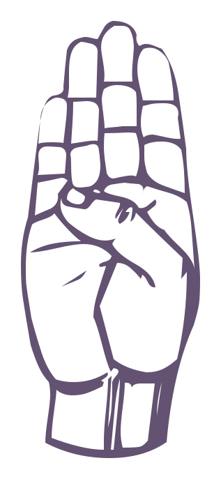

LEARN / LETTER LESSON01 / 26

↝ MOTION SIGN
Letter A
✓ STUDIEDMake a gentle fist.
Build your ASL foundation with visual lessons, quick knowledge checks, and live camera practice. No experience needed.
Three ways to learn, all working together.
Explore all 26 letters with clear illustrations and step-by-step handshape tips.
EXPLORE LETTERSUse the camera practice studio to get experimental real-time feedback on static letters.
OPEN PRACTICEReview handshapes with a calm, self-paced alphabet knowledge check.
REVIEW LETTERSChoose a letter to see its handshape and learn how to make it.
Make a gentle fist.
Look at the handshape and choose the matching letter. There is no timer or score—just another chance to learn.
Take your time. Getting a sign wrong is part of learning it.

Choose a letter to see how you did.
Fingerspelling is a starting point, not all of ASL. American Sign Language has its own grammar, facial expressions, and rich Deaf culture. For full language learning, study with Deaf ASL educators and use real signed conversations.